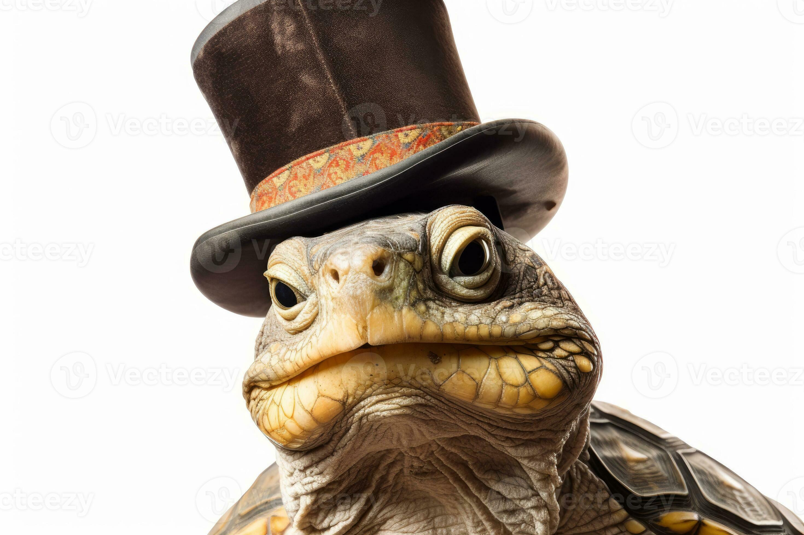

New York man attempts to smuggle 1000 turtles through TSA in his Top Hat. On September 30, 2025 a man traveling through JKF airport tries to go through TSA with a top hat full of turtles.In what officials are calling “the most ambitious reptilian headwear stunt in aviation history,” a man was apprehended at JFK Airport after attempting to smuggle 1,000 live turtles through TSA—concealed entirely within his top hat. The suspect, identified only as “Terrence Turtletop,” reportedly strutted into Terminal 4 wearing a Victorian-era top hat that was visibly pulsating. Witnesses say the hat emitted faint hissing noises and occasional shell clinks, which Terrence dismissed as “the sound of fashion evolving.” TSA agents became suspicious when Terrence’s hat failed to fit through the X-ray machine and instead triggered a “biological anomaly” alert. Upon inspection, agents discovered a densely packed, spiraling ecosystem of turtles stacked like Pringles—each one wearing a tiny monocle and bowtie. “It was like a reptile Russian nesting doll,” said TSA agent Linda McSnapp. “Every time we removed one turtle, another popped up wearing a smaller hat.” Terrence claimed he was en route to Paris for “Turtlé Vogue,” an underground fashion show featuring amphibians in haute couture. Authorities suspect a more sinister motive: black-market turtle trading. “Turtles are the new crypto,” said one anonymous customs official. “Slow, mysterious, and somehow worth thousands if you whisper the right Latin name.” As of press time, the turtles have been relocated to a luxury terrarium in Queens, where they are reportedly enjoying spa treatments and composing memoirs. Terrence remains in custody, awaiting trial—and possibly a Netflix documentary. 
Woman in Florida is shown on video riding a unicorn on September 30, 2025. Passerby saw her riding a unicorn across a lake. They couldn't believe their eyes but she was really riding a unicorn. n a moment that defied logic, biology, and several local ordinances, a woman in Florida was caught on video riding a unicorn across Lake Euphoria early Tuesday morning. The footage, now viral, shows the woman—clad in a glittering cape and sipping what appears to be a pumpkin spice latte—galloping across the water’s surface atop a horned, shimmering equine. “I thought it was a jet ski at first,” said local fisherman Carl Dobbins. “Then I realized jet skis don’t sparkle or neigh majestically.” Another passerby, TikTok user @MermaidMom69, live-streamed the event while screaming, “SHE’S ON A UNICORN! I REPEAT, A UNICORN!” Her video has since garnered 12 million views and a sponsorship deal with a glitter company. Dr. Harold Blimpton, a zoologist at the University of Florida, held a press conference to clarify that unicorns are “not real,” but admitted the footage “does complicate things.” He added, “If this is a prank, it’s the most majestic prank I’ve ever seen.” In true Florida fashion, the state’s tourism board has already launched a “Ride the Magic” campaign, offering lake tours on inflatable unicorns and selling “I Believe” bumper stickers. Lake Euphoria has been renamed “Lake Mysticorn” pending approval from the Department of Magical Renaming.